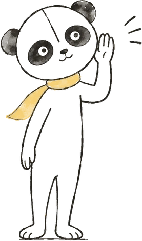
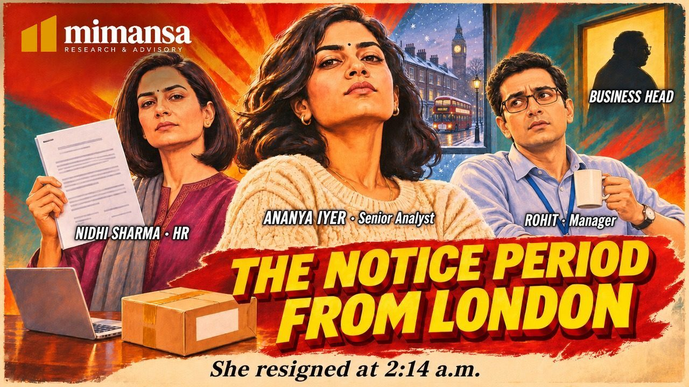
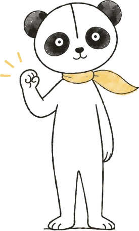

Stories from Indian workplaces, shared by HR leaders.
Each one is a short film about something that really happened at work: what people did, why, and what happened next. Some have a clear lesson. Others leave you asking what you would have done. Every name and detail that could point to a person is changed.

Each story came from an HR leader who shared with us. We interviewed them before filming.

Two Letters on the Table
He Ate His Own Termination Letter
What do you do when an exit meeting goes off script?

Resigned. Withdrawn. Resigned.
“He Says He’s the Only One on My Side”: The Complaint HR Couldn’t Prove
What should HR do when a complaint can’t be proved?
Watch the film →
The Notice Period from London
A Three-Week Holiday That Became a Move Abroad
When does a long holiday turn into a resignation?

It Wasn’t My Signature, But It Was My Mistake
One Backdated Entry Almost Cost an HR Manager His Job
How much can one small shortcut cost?

Get It Done Today
She Followed the CEO’s Order. Then Came the Inquiry.
Who answers for an order that came from the top?

PFA the FIR
A Fired Employee Named HR in a Police Complaint. The CCTV Was Already Gone.
What should HR keep, and for how long?

Paid Like Me
He Checked His Own Hiring Bill. The Numbers Didn’t Add Up.
Who checks what hiring really costs?

Termination Without Cause
How a Two-Line Contract Clause Saved a Company from Its Own Business Head
What can a contract do when the problem is the business head?

Have a story from your workplace? You can share it without your name.
Share a situation from your workplace.
Anyone can share. Describe what happened in your own words and leave out names. You can keep your own name off anything we publish.